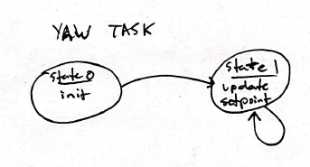
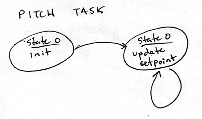

- Generated by
 1.9.6
1.9.6
|
ME 405 Term Project
|
The software architecture was designed around cooperative multitasking. Each subfunction was separated into its own task that voluntarily yields control of the processor to other tasks. Each task is written to cooperate with the others by regularly giving up control to ensure system performance and avoid blocking conditions. The tasks are managed by a scheduler, which functions by calling the task of the highest priority that is ready to run, as specified by the minimum period for it specified in its instantiation.
5 tasks were used in the codebase: one for each motor, one for the trigger servo, one for the thermal camera, and one for high level control of system operations and delegation to other tasks. This last task, "mastermind," handles all major logic and flow of operations of the blaster apparatus. The other 4 tasks represent no high-level logic, instead relying on flags/instructions such as set point to rotate to, whether or not it should fire, and whether or not to take an image. This approach was chosen to keep logic and system flow clear, simple, and centralized. It also minimized variables that needed to be shared between tasks, other than to mastermind. Inter-task data was handled with share variables, 6 of which were implemented to handle pitch/yaw angles of target as seen by camera, pitch/yaw angles to rotate to by motors, fire flag, and flag to take image.
In terms of duel sequencing, a 5 second timer was used after user button is pressed to wait until after the period in which each team may freely move behind their table. Due to the high latency of the thermal camera (1-2 Hz) we did not attempt to shoot while the target was moving. After this 5 seconds, the camera is queued to take an image, and after the motors are given to align with the new target, the trigger flag is raised to fire.
Within each motor task, 3 drivers classes are instiated for the encoder driver, motor driver, and position feedback control. The encoder_reader.py driver implements a class to read and manage the position of a quadrature encoder. It detects underflow/overflow conditions of the 16 bit counter and calculates the position delta. The motor_driver.py driver works by changing the direciton and duty cycle for a BDC motor based on a signed PWM duty cycle passed to it. The feedback_control.py file implments a closed feedback controller to control position of the motor based on the aforementioned encoder and motor objects. It can use any combination of P/I/D control.
A task share diagram and finite state machines for each task can be referenced in the figures below.
The task share diagram describes the shared variables between tasks and priority/frequency of each task.
Mastermind handels all timing and processes information to define motor set points, request new camera image and set a trigger actuation. The finite state machine for mastermind is attached below.
The thermal camera state takes a picture by communicating with the mlx camera. This task also processes the image for a target and sets a desired yaw and pitch angle based on the camera field of view.
The trigger task is used to actuate a servo motor to fire the nerf gun when the signal from mastermind is recieved.
The finite machines for the yaw and pitch controller tasks are defined below. Both tasks use the same control approach and the desired set point is controlled by shared variables with mastermind.
 